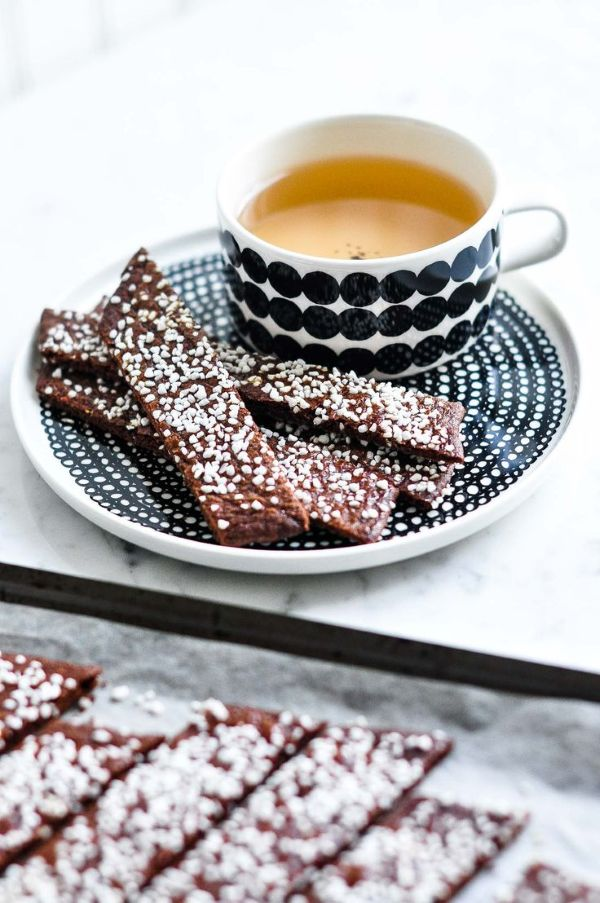

7. Chokladsnittar

Chokladsnittar är spröda småkakor med kakao. De formas till längder som skärs diagonalt efter gräddningen.
Ger: cirka 40 kakor.
Ingredienser
- 100 g rumsvarmt smör
- 1,25 dl strösocker
- 1 äggula
- 2,5 dl vetemjöl
- 3 msk kakao
- 1 msk vaniljsocker
- 0,5 tsk bakpulver
- 1 äggvita till pensling
- 1 msk pärlsocker till garnering
Gör så här
- Värm ugnen till 200 °C.
- Vispa smör och socker luftigt och blanda sedan ner äggulan.
- Blanda vetemjöl, kakao, vaniljsocker och bakpulver separat.
- Arbeta ihop de torra ingredienserna med smörblandningen till en deg.
- Dela degen i fyra delar och rulla ut dem till längder.
- Lägg längderna på en plåt med bakplåtspapper och platta till dem.
- Vispa äggvitan lätt, pensla längderna och strö på pärlsocker.
- Grädda mitt i ugnen i 12–15 minuter.
- Skär längderna diagonalt i bitar direkt när de kommer ut ur ugnen.
- Låt kakorna svalna på plåten.
Receptkälla: Arla – Chokladsnittar